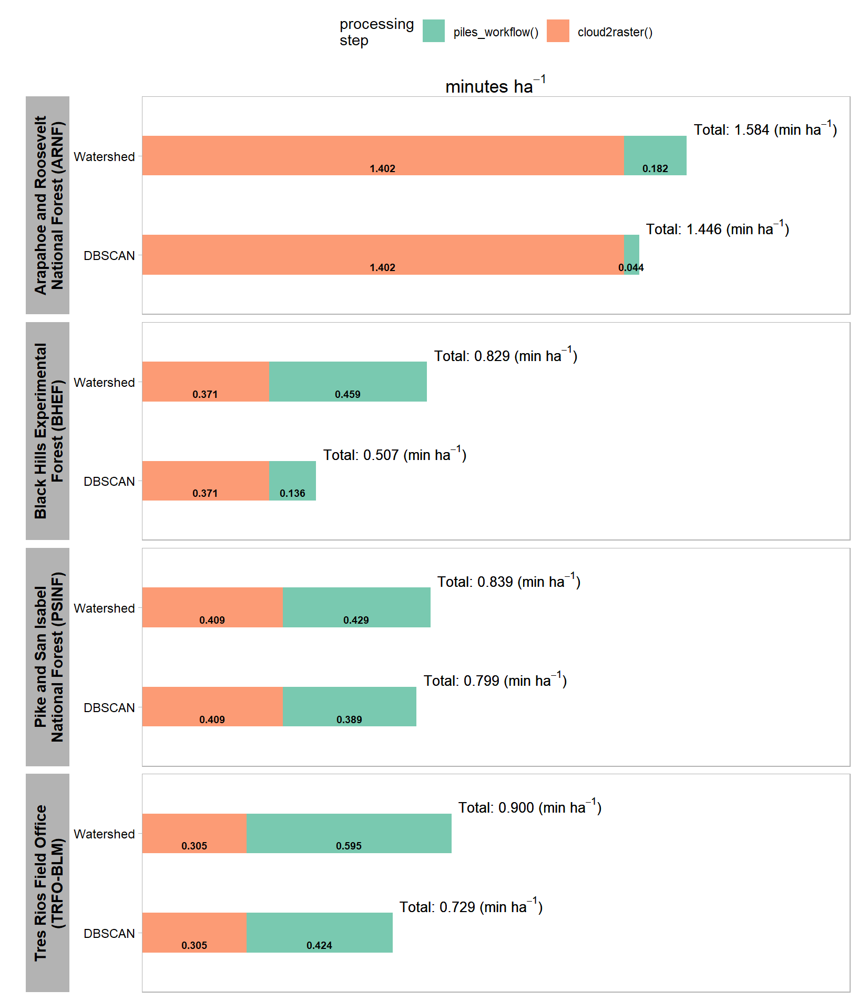

Section 10 Processing Time
A key component of our UAS-based slash pile detection and quantification framework is the cost and time savings compared to traditional field work, especially when used over entire treatment extents to enable census-level monitoring. When we processed the UAS point cloud, we tracked how long it took to generate the CHM raster input required for the proposed framework using the cloud2trees::cloud2raster() function. We have compiled the proposed slash pile detection and quantification framework into the cloud2trees::piles_workflow() function to enable operational use of the tool. In this section we’ll time how long the slash pile methodology takes over the four study sites.
first, we’ll rename our chm_rast and rgb_rast objects in our current R session so that it is clear what we are processing
chm_rast_list <- chm_rast
rgb_rast_list <- rgb_rast
remove(chm_rast, rgb_rast)
gc()
# organize our out_dir paths where the c2t outputs live as well
# suffix
suffix_temp <- "_out_dir"
# convert to list of objects and remove the suffix from the name in the list
out_dir_list <-
all_stand_boundary$site_data_lab %>%
paste0(suffix_temp) %>%
base::mget(inherits = T) %>%
purrr::set_names(~ str_remove(.x, suffix_temp))
# names(out_dir_list)
# dplyr::glimpse(out_dir_list)
# remove
all_stand_boundary$site_data_lab %>%
paste0(suffix_temp) %>%
purrr::map(\(x) remove(list = x,inherits = T))let’s see which cloud2trees version we have
## [1] '0.8.0'this version has the piles_workflow() function hidden as an internal function so we’re going to use ::: syntax, but future users should be able to use :: syntax as in cloud2trees::piles_workflow()
read in the cloud2raster() processing times
# read in the cloud2raster() processing times
processed_tracking_data <-
out_dir_list %>%
purrr::map_dfr(
\(x)
dplyr::bind_cols(
# cloud2raster timer
readr::read_csv(file = file.path(x,"processed_tracking_data.csv"), progress = F, show_col_types = F) %>%
dplyr::select( -dplyr::any_of(c(
"hey_xxxxxxxxxx"
, "number_of_points"
, "las_area_m2"
)))
# data from las_ctg
, sf::st_read(dsn = file.path(x,"raw_las_ctg_info.gpkg"), quiet = T) %>%
dplyr::ungroup() %>%
sf::st_set_geometry("geometry") %>%
dplyr::summarise(
geometry = sf::st_union(geometry)
, number_of_points = sum(Number.of.point.records, na.rm = T)
) %>%
dplyr::mutate(
las_area_m2 = sf::st_area(geometry) %>% as.numeric()
) %>%
sf::st_drop_geometry()
)
, .id = "site_data_lab"
) %>%
# add calcs
dplyr::mutate(
points_per_m2 = number_of_points/las_area_m2
, timer_cloud2raster_mins_per_ha = timer_cloud2raster_mins/(las_area_m2/10000)
)
# dplyr::glimpse(processed_tracking_data)we’ll get the predictions using both the DBSCAN and Watershed segmentation approaches but all we really care about is the processing time and not the results themselves since we already generated and evaluated the predictions
# rgb_rast_list
# terra::global(terra::subset(rgb_rast_list[["pj"]],1), "notNA")[[1]]*prod(terra::res(terra::subset(rgb_rast_list[["pj"]],1))[1:2])
# terra::subset(rgb_rast_list[["pj"]],1) %>%
# terra::cellSize() %>%
# terra::mask(terra::subset(rgb_rast_list[["pj"]],1)) %>%
# terra::global("sum", na.rm=TRUE) %>%
# as.numeric()
##################################################
# map over piles_workflow() for dbscan if haven't done it already
##################################################
# out_dir_list
# check if we already ran the piles_workflow()
processed_tracking_data_full <-
out_dir_list %>%
purrr::imap(
function(x, nm){
###################################################
# get raster area
# is it already done?
###################################################
if(
any(stringr::str_equal(names(processed_tracking_data), "rast_area_m2"))
&& nrow(
processed_tracking_data %>%
dplyr::filter(site_data_lab==nm & !is.na(rast_area_m2))
)==1
){
this_rast_area_m2 <-
processed_tracking_data %>%
dplyr::filter(site_data_lab==nm & !is.na(rast_area_m2)) %>%
dplyr::pull(rast_area_m2)
}else{
this_rast_area_m2 <-
terra::subset(rgb_rast_list[[nm]],1) %>%
terra::cellSize() %>%
terra::mask(terra::subset(rgb_rast_list[[nm]],1)) %>%
terra::global("sum", na.rm=TRUE) %>%
as.numeric()
}
###################################################
# dbscan
# is it already done?
###################################################
if(
any(stringr::str_equal(names(processed_tracking_data), "timer_piles_workflow_dbscan_mins"))
&& nrow(
processed_tracking_data %>%
dplyr::filter(site_data_lab==nm & !is.na(timer_piles_workflow_dbscan_mins))
)==1
){
timer_dbscan_mins <-
processed_tracking_data %>%
dplyr::filter(site_data_lab==nm & !is.na(timer_piles_workflow_dbscan_mins)) %>%
dplyr::pull(timer_piles_workflow_dbscan_mins)
}else{
# run it
my_st_temp <- Sys.time()
message(paste("starting", nm, "piles_workflow(seg_method = dbscan) step at ...", my_st_temp))
# cloud2trees::piles_workflow
piles_workflow_ans <- cloud2trees:::piles_workflow(
chm_rast = chm_rast_list[[nm]]
, seg_method = "dbscan"
, min_ht_m = all_stand_boundary %>% dplyr::filter(site_data_lab==nm) %>% dplyr::pull(min_ht_m)
, max_ht_m = all_stand_boundary %>% dplyr::filter(site_data_lab==nm) %>% dplyr::pull(max_ht_m)
, min_area_m2 = all_stand_boundary %>% dplyr::filter(site_data_lab==nm) %>% dplyr::pull(min_area_m2)
, max_area_m2 = all_stand_boundary %>% dplyr::filter(site_data_lab==nm) %>% dplyr::pull(max_area_m2)
, min_convexity_ratio = all_stand_boundary %>% dplyr::filter(site_data_lab==nm) %>% dplyr::pull(min_convexity_ratio)
, min_circularity_ratio = all_stand_boundary %>% dplyr::filter(site_data_lab==nm) %>% dplyr::pull(min_circularity_ratio)
, smooth_segs = T
, rgb_rast = rgb_rast_list[[nm]]
, red_band_idx = 1
, green_band_idx = 2
, blue_band_idx = 3
, spectral_weight = all_stand_boundary %>% dplyr::filter(site_data_lab==nm) %>% dplyr::pull(spectral_weight)
, filter_return = T
, outfile = file.path(x, "piles_workflow_dbscan_piles.gpkg")
)
# end
my_end_temp <- Sys.time()
# timer
timer_dbscan_mins <- difftime(my_end_temp, my_st_temp, units = c("mins")) %>% as.numeric()
}
###################################################
# watershed
# is it already done?
###################################################
if(
any(stringr::str_equal(names(processed_tracking_data), "timer_piles_workflow_watershed_mins"))
&& nrow(
processed_tracking_data %>%
dplyr::filter(site_data_lab==nm & !is.na(timer_piles_workflow_watershed_mins))
)==1
){
timer_watershed_mins <-
processed_tracking_data %>%
dplyr::filter(site_data_lab==nm & !is.na(timer_piles_workflow_watershed_mins)) %>%
dplyr::pull(timer_piles_workflow_watershed_mins)
}else{
# run it
my_st_temp <- Sys.time()
message(paste("starting", nm, "piles_workflow(seg_method = watershed) step at ...", my_st_temp))
# cloud2trees::piles_workflow
piles_workflow_ans <- cloud2trees:::piles_workflow(
chm_rast = chm_rast_list[[nm]]
, seg_method = "watershed"
, min_ht_m = all_stand_boundary %>% dplyr::filter(site_data_lab==nm) %>% dplyr::pull(min_ht_m)
, max_ht_m = all_stand_boundary %>% dplyr::filter(site_data_lab==nm) %>% dplyr::pull(max_ht_m)
, min_area_m2 = all_stand_boundary %>% dplyr::filter(site_data_lab==nm) %>% dplyr::pull(min_area_m2)
, max_area_m2 = all_stand_boundary %>% dplyr::filter(site_data_lab==nm) %>% dplyr::pull(max_area_m2)
, min_convexity_ratio = all_stand_boundary %>% dplyr::filter(site_data_lab==nm) %>% dplyr::pull(min_convexity_ratio)
, min_circularity_ratio = all_stand_boundary %>% dplyr::filter(site_data_lab==nm) %>% dplyr::pull(min_circularity_ratio)
, smooth_segs = T
, rgb_rast = rgb_rast_list[[nm]]
, red_band_idx = 1
, green_band_idx = 2
, blue_band_idx = 3
, spectral_weight = all_stand_boundary %>% dplyr::filter(site_data_lab==nm) %>% dplyr::pull(spectral_weight)
, filter_return = T
, outfile = file.path(x, "piles_workflow_watershed_piles.gpkg")
)
# end
my_end_temp <- Sys.time()
# timer
timer_watershed_mins <- difftime(my_end_temp, my_st_temp, units = c("mins")) %>% as.numeric()
}
###################################################
# write times
###################################################
df <-
processed_tracking_data %>%
dplyr::filter(site_data_lab==nm) %>%
dplyr::mutate(
timer_piles_workflow_dbscan_mins = timer_dbscan_mins
, timer_piles_workflow_watershed_mins = timer_watershed_mins
, rast_area_m2 = this_rast_area_m2
, chm_rast_res_m = terra::subset(chm_rast_list[[nm]],1) %>% terra::res() %>% .[1] %>% as.numeric()
, rgb_rast_res_m = terra::subset(rgb_rast_list[[nm]],1) %>% terra::res() %>% .[1] %>% as.numeric()
)
# write
df %>%
dplyr::select(-c(site_data_lab)) %>%
readr::write_csv(file = file.path(x,"processed_tracking_data.csv"), append = F, progress = F)
# return
return(df)
}
) %>%
dplyr::bind_rows()
# processed_tracking_data_full %>% dplyr::glimpse()let’s add the per area values and look at the processing data structure
processed_tracking_data_full <-
processed_tracking_data_full %>%
dplyr::mutate(
timer_piles_workflow_dbscan_mins_per_ha = timer_piles_workflow_dbscan_mins/(rast_area_m2/10000)
, timer_piles_workflow_watershed_mins_per_ha = timer_piles_workflow_watershed_mins/(rast_area_m2/10000)
) %>%
dplyr::left_join(
all_stand_boundary %>%
sf::st_drop_geometry() %>%
dplyr::select(site, site_data_lab, site_full_lab, site_area_ha)
, by = "site_data_lab"
) %>%
dplyr::relocate(tidyselect::starts_with("site"))
processed_tracking_data_full %>% dplyr::glimpse()## Rows: 4
## Columns: 16
## $ site_data_lab <chr> "arnf", "bhef", "psinf", "p…
## $ site <chr> "ARNF Ponderosa Pine Site",…
## $ site_full_lab <chr> "Arapahoe and Roosevelt Nat…
## $ site_area_ha <dbl> 73.606204, 103.102464, 17.4…
## $ timer_cloud2raster_mins <dbl> 174.040155, 106.994817, 17.…
## $ points_per_m2 <dbl> 1102.8458, 491.5385, 375.40…
## $ timer_cloud2raster_mins_per_ha <dbl> 1.4019279, 0.3706547, 0.409…
## $ timer_piles_workflow_dbscan_mins <dbl> 3.414274, 14.960973, 7.4795…
## $ timer_piles_workflow_watershed_mins <dbl> 14.204253, 50.410156, 8.247…
## $ rast_area_m2 <dbl> 780582.76, 1099205.20, 1920…
## $ chm_rast_res_m <dbl> 0.15, 0.15, 0.10, 0.10
## $ rgb_rast_res_m <dbl> 0.08, 0.08, 0.06, 0.06
## $ number_of_points <int> 1369110780, 1418896812, 158…
## $ las_area_m2 <dbl> 1241434.4, 2886644.0, 42091…
## $ timer_piles_workflow_dbscan_mins_per_ha <dbl> 0.04374007, 0.13610719, 0.3…
## $ timer_piles_workflow_watershed_mins_per_ha <dbl> 0.1819699, 0.4586055, 0.429…make a nice table of the processing times per hectare
processed_tracking_data_full %>%
dplyr::select(
site_full_lab, site_area_ha
# data desc
, points_per_m2, chm_rast_res_m, rgb_rast_res_m
# timer
# , tidyselect::ends_with("_per_ha")
, timer_cloud2raster_mins_per_ha, timer_piles_workflow_dbscan_mins_per_ha, timer_piles_workflow_watershed_mins_per_ha
) %>%
dplyr::mutate(
dplyr::across(tidyselect::ends_with("_area_ha"), ~scales::comma(.x,accuracy = 0.1, suffix = " ha"))
, dplyr::across(tidyselect::ends_with("_per_m2"), ~scales::comma(.x,accuracy = 1))
, dplyr::across(tidyselect::ends_with("_res_m"), ~scales::comma(.x,accuracy = 0.01))
, dplyr::across(tidyselect::ends_with("_per_ha"), ~scales::comma(.x,accuracy = 0.001))
) %>%
dplyr::arrange(site_full_lab) %>%
# dplyr::glimpse()
kableExtra::kbl(
caption = "Data Processing Summary"
, col.names = c(
"site", "hectares"
# data desc
, "points m<sup>-2</sup>", "CHM<br>resolution (m)", "RGB ortho<br/>resolution (m)"
# timer
# , "timer_cloud2raster_mins_per_ha", "timer_piles_workflow_dbscan_mins_per_ha", "timer_piles_workflow_watershed_mins_per_ha"
, "`cloud2raster()`", "`piles_workflow()`<br/>DBSCAN", "`piles_workflow()`<br/>watershed"
)
, escape = F
# , digits = 2
) %>%
kableExtra::kable_styling(font_size = 11) %>%
kableExtra::add_header_above(
c(
" "=2
, "Input Data<br/>Description" = 3
, "Processing Time<br/>minutes ha<sup>-1</sup>" = 3
)
, escape = F
) %>%
kableExtra::column_spec(seq(2,8,by=3), border_right = TRUE, include_thead = TRUE)| site | hectares | points m-2 |
CHM resolution (m) |
RGB ortho resolution (m) |
cloud2raster()
|
piles_workflow()DBSCAN |
piles_workflow()watershed |
|---|---|---|---|---|---|---|---|
| Arapahoe and Roosevelt National Forest (ARNF) | 73.6 ha | 1,103 | 0.15 | 0.08 | 1.402 | 0.044 | 0.182 |
| Black Hills Experimental Forest (BHEF) | 103.1 ha | 492 | 0.15 | 0.08 | 0.371 | 0.136 | 0.459 |
| Pike and San Isabel National Forest (PSINF) | 17.5 ha | 375 | 0.10 | 0.06 | 0.409 | 0.389 | 0.429 |
| Tres Rios Field Office (TRFO-BLM) | 5.2 ha | 569 | 0.10 | 0.06 | 0.305 | 0.424 | 0.595 |
let’s make a plot as well
# plot it
processed_tracking_data_full %>%
dplyr::select(
site_full_lab, site_area_ha
# timer
# , tidyselect::ends_with("_per_ha")
, timer_cloud2raster_mins_per_ha, timer_piles_workflow_dbscan_mins_per_ha, timer_piles_workflow_watershed_mins_per_ha
) %>%
tidyr::pivot_longer(cols = tidyselect::starts_with("timer_piles_workflow_")) %>%
dplyr::mutate(
name = name %>%
stringr::str_remove_all("^timer_piles_workflow_") %>%
stringr::str_remove_all("_mins_per_ha$")
) %>%
dplyr::rename(
method = name
, timer_piles_workflow_mins_per_ha = value
) %>%
tidyr::pivot_longer(cols = tidyselect::starts_with("timer_")) %>%
dplyr::mutate(
name = name %>%
stringr::str_remove_all("^timer_") %>%
stringr::str_remove_all("_mins_per_ha$") %>%
stringr::str_c("()") %>%
factor() %>%
forcats::fct_rev()
) %>%
dplyr::rename(part = name) %>%
dplyr::group_by(site_full_lab, site_area_ha, method) %>%
dplyr::mutate(sum_value = sum(value,na.rm=T)) %>%
dplyr::ungroup() %>%
dplyr::mutate(
dplyr::across(tidyselect::ends_with("_area_ha"), ~scales::comma(.x,accuracy = 0.1, suffix = " ha"), .names = "{.col}_lab")
, dplyr::across(tidyselect::ends_with("value"), ~scales::comma(.x,accuracy = 0.001), .names = "{.col}_lab")
, sum_value_lab =
# stringr::str_c("Total: ", sum_value_lab) %>%
stringr::str_c("Total: ", sum_value_lab, " (min $ha^{-1}$)") %>%
latex2exp::TeX(output = "character")
, method = method %>%
factor(ordered = T) %>%
forcats::fct_recode("DBSCAN" = "dbscan", "Watershed" = "watershed")
, site_full_lab = stringr::str_wrap(site_full_lab, width=26)
) %>%
ggplot2::ggplot(
mapping = ggplot2::aes(
y = method
, fill = part
, group = part
)
) +
ggplot2::geom_col(mapping = ggplot2::aes(x = value), alpha = 0.88, width = 0.4) +
ggplot2::geom_text(
mapping = ggplot2::aes(
x = value
, label = value_lab
, fontface = "bold"
)
, position = position_stack(vjust = 0.5)
, color = "black", size = 2.5
, vjust = 2
) +
geom_text(
mapping = ggplot2::aes(x = sum_value, label = sum_value_lab)
, color = "black", size = 3.5
, hjust = -0.05, vjust = -1
, parse = T
) +
ggplot2::facet_grid(
rows = dplyr::vars(site_full_lab)
# , cols = dplyr::vars(method)
, scales = "free_y"
, axes = "all_x"
, switch = "y"
# , labeller = ggplot2::label_wrap_gen(width = 20)
) +
ggplot2::scale_fill_brewer(palette = "Set2") +
ggplot2::scale_x_continuous(
labels = scales::comma, expand = ggplot2::expansion(mult = c(0,.3))
, breaks = NULL
, position = "top"
) +
ggplot2::labs(
x = latex2exp::TeX("minutes $ha^{-1}$")
, y = ""
, fill = "processing\nstep"
) +
ggplot2::theme_light() +
ggplot2::theme(
legend.position = "top"
, axis.text.y = ggplot2::element_text(size = 9, color = "black")
, axis.title.x = ggplot2::element_text(size = 13, color = "black", face = "bold")
, strip.text.y = ggplot2::element_text(size = 11, color = "black", face = "bold")
, strip.placement = "outside"
, strip.text.y.left = ggplot2::element_text(angle = 90)
# , strip.background = ggplot2::element_blank()
, panel.grid = ggplot2::element_blank()
)